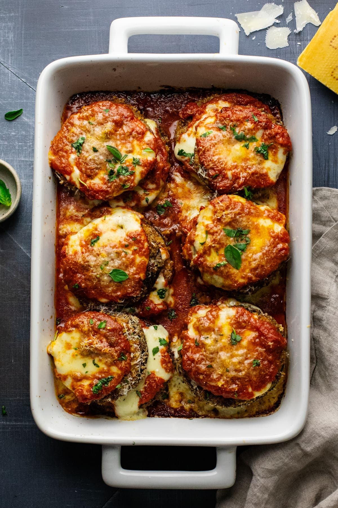

Eggplant Parmesan

Ingredients
- 4 eggplant
- 1 tablespoon salt
- olive oil
- eggs
- all-purpose flour
- Parmesan cheese
- marinara sauce
Steps
- Place eggplant slices in a large bowl in layers, sprinkling each layer with salt. Let stand for 30 minutes to drain. Rinse and dry on paper towels.
- Heat olive oil in a large skillet over medium heat. Whisk eggs with water and flour until smooth. Dip eggplant slices in batter and fry in the hot oil until golden brown, working in batches of 2 to 3 slices at a time.
- Cover and cook on Low until tender and flavors have blended, 4 to 5 hours.